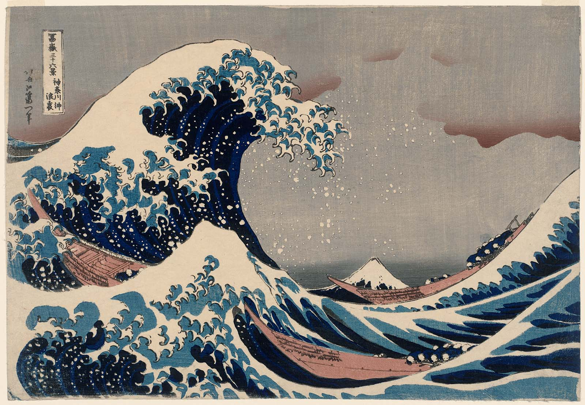

 Rob Spencer is a retired Marine Master Sergeant. He graduated from Orange Park Senior High in May of 1996, and in August attended recruit training at MCRD Parris Island South Carolina with Platoon 2152, Hotel Company. This marked the beginning of over 20 years of military service. While active duty Cory traveled to such places as Germany, Korea, Japan, Kuwait, Mexico, Guam, and Austrailia. In June of 2000 Rob met and married Misao Iwai of Hiroshima Japan they celebrated 22 years of Marriage June of 2022. In December of 2003, Rob deployed with the Marines of 1stMarDiv in support of Operation Iraqi Freedom. After the war Rob continued his military career, with several tours in the Pacific theatre. In March of 2005 his first child Sasha was born, and in February of 2010 his son Jacob was born! Rob and Misao would continue to raise a family in the military community until his retirement in Jul of 2019. Rob retired from the Marine Corps in 2019 after 23 years of service, and currently lives in Green Cove Springs Fl.
Rob enjoys fishing and all things having to do with the ocean. Rob comes from a family of fishermen, and as such loves to fish whenever he gets the opportunity. What facinates him about fishing is that it is both simple yet complex at the same time. Over the years Rob has had the opportunity to fish in several different enviroments. By far the most fun is when he is deep sea fishing. Deep sea fishing is not something that appeals to everyone but for those who enjoy the sport very few things can compare! Whilst serving in Okinawa Rob came accross a artist that would paint pictures of fish that he has caught. these pictures now decorate his office and serve to remind him just how much fun it is to lose yourself in your hobby.
Another past time is running, there is nothing more satisfying then finishing a hard run. Even though his Dr has advised against running as it may further injure his exsisting injuries Rob still enjoys running from time to time just as a means to relieve stress. Running allows the runner to let his mind drift, it provides a "release valve" allowing all the problems of the day to work there way out of the body. During his miiltary career he has had an opportunity to run in several different locations including Guam, Okinawa, Hawaii, and even Austrailia. Running represents a escape from the mundane and serves as an analogy for life. Just keep putting one foot in front of the other!